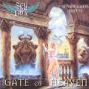

|
|
||
Sky Lark : Gate of Heaven (2000) |
|

http://www.webs.to/skylark |
1. Among the Clouds 4:35 |
8/10 |
|
Segunda parte de la serie conceptual "Divine Gates" (Puertas Divinas), "Gate of Heaven" es un excelente disco de power metal, épico, sinfónico, estructurado a modo de diálogo entre varios personajes. Letras elaboradas, preponderancia de los teclados frente a las guitarras y un solista, Fabio Dozzo, de voz dulce, quizás un tanto empalagosa, para componer una obra melodiosa, de ritmos alternados, voces superpuestas y sonido puro y brillante. Nubes de seda y algodón, luces sin sombras, ángeles y guerreros, dudas y temor, la lucha entre el bien y el mal, y la batalla que se prepara en la fortaleza blanca. El enemigo está en cada uno de nosotros... La producción de este disco es mejorable, al menos en cuanto a sonido. El disco suena un tanto apagado, da la sensación de que por mucho que subes el volumen nunca está alto. Quizás tenga que ver que los teclados llevan mucho el peso de las canciones, y que las guitarras rítmicas se oyen bastante poco. Por otra parte, el trabajo superponiendo voces, conjuntando instrumentos y con los arreglos es muy bueno, y en ese aspecto el resultado ha sido redondo. "Among the Clouds" comienza el disco con fuerza, teclados armoniosos, doble bombo, coros a varias voces, y un buen trabajo de guitarra rítmica, y aunque los teclados ordenan y mandan, la guitarra aparece en un fantástico solo reivindicando atención. El guerrero blanco confía en la victoria. "Who is God?" baja un tanto el tono, el sonido es algo más oscuro, la duda aparece, el guerrero blanco ya no sabe quién es Dios, el mal está por doquier. Los teclados y las guitarras de nuevo se combinan a la perfección en las partes instrumentales, técnicas y elaboradas. El tercer corte, "Lady of the Sky", es más lento y más delicado, pero los solos van a mil por hora. El angel guardian tiene que ayudar el guerrero blanco, la princesa de la nieve, aparece también para dar ánimos al guerrero, a punto de volverse loco. En "Insanity is the Truth", el guerrero blanco aparece desesperado. Teclados lastimosos y coros apesadumbrados son el sonido de la noche en el alma del protagonista. Los gladiadores divinos se unirán al guerrero en la lucha. Un brillo de esperanza. "The Guardian Angel" trae de vuelta la contundencia de las guitarras, y acelera de nuevo el ritmo. El ángel guardian está dispuesto a sacrificarse por el guerrero blanco. En "The Heaven Church" el guerrero confía por fin en la victoria. Más excelentes teclados, y esta vez las guitarras rítmicas son un simple acompañamiento. Varias capas de voces se superponen para conseguir diálogos dinámicos y veloces. Aparecen de nuevo los solos vertiginosos y cortantes. La victoria, Belzebú ha sido derrotado, el guerrero deberá no obstante seguir vigilante. En "Last Christmas in Hell" vuelve la contundencia de las guitarras. No se puede derrotar definitivamente al mal, hay que saber que está dentro de cada uno. Tras un final de disco hablado, "Outro", aparece una pista que no se menciona en el disco, "A Star in the Universe", una cancioncita lenta, suave y melodiosa, cierra definitivamente este álbum. |
||
Rubén Béjar |
||